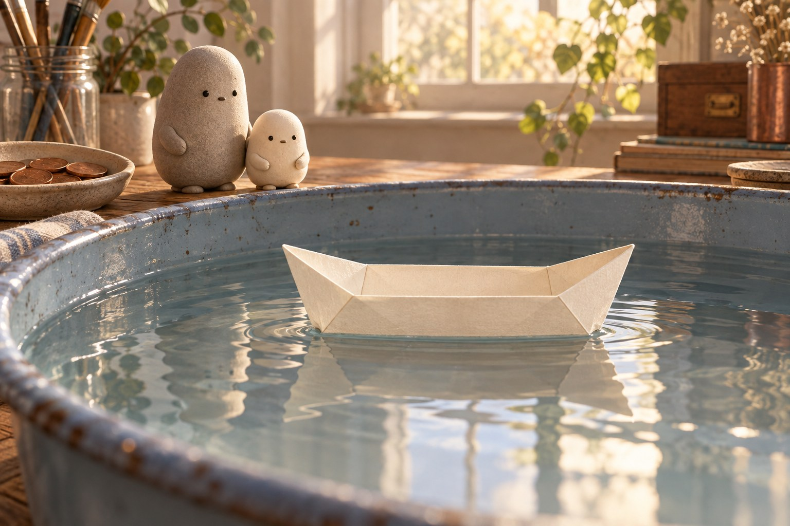
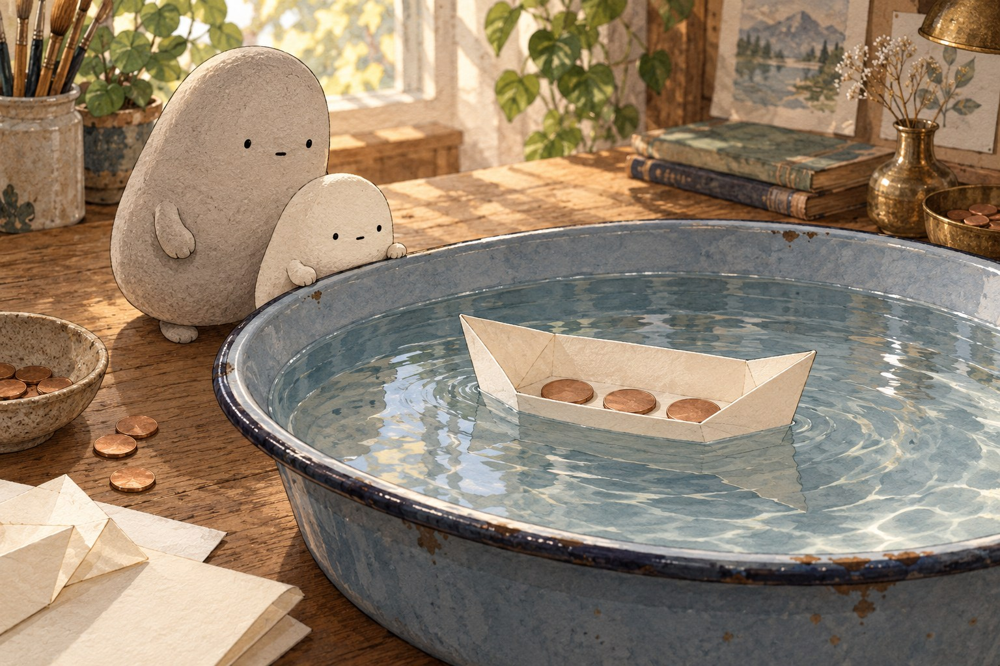
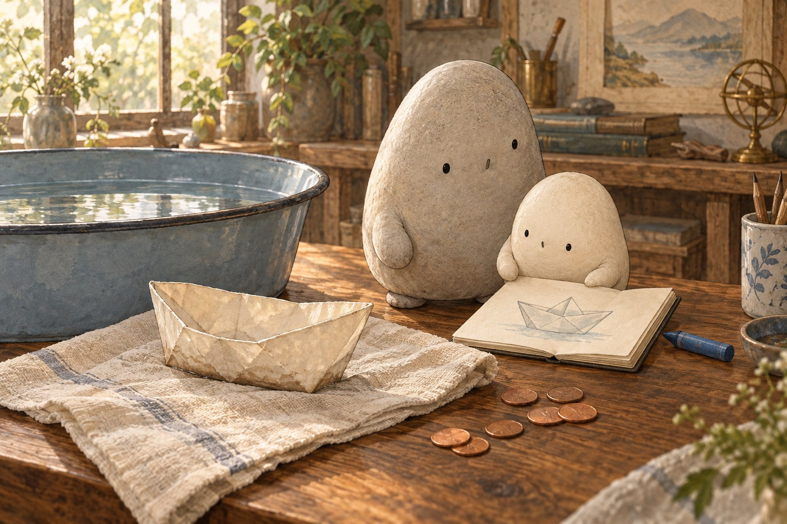
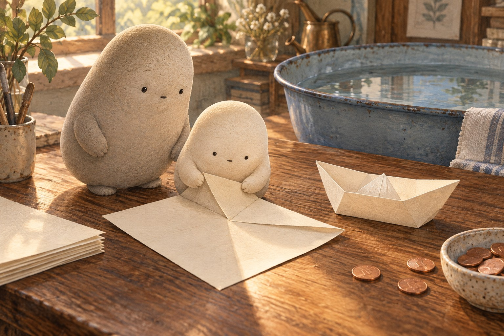
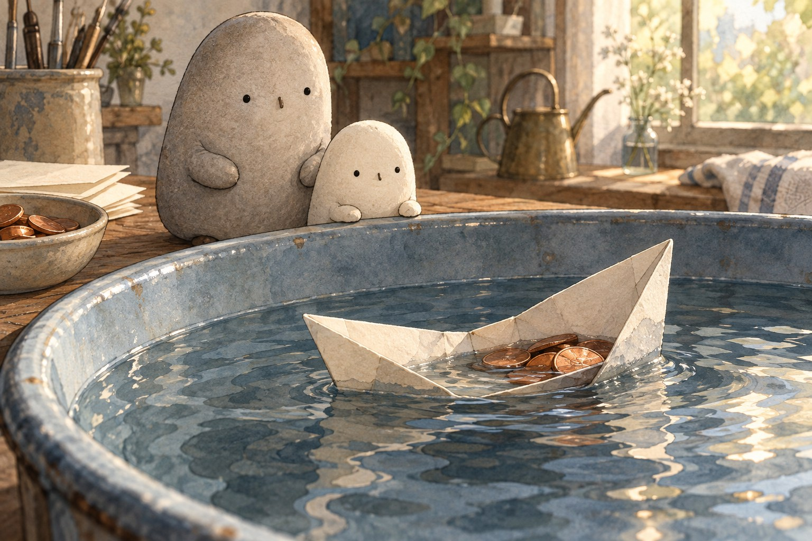

What holds a paper boat above the bottom of the tub?
Where shall we look?
Can the shape of paper help it carry a penny?
Compare the flat sheet with the folded boat in the next scene.
A little explanation & something to try
Folded walls and a broad, flat bottom make a space that keeps water out. The air inside is part of what floats. A flat sheet may rest on water briefly, but it has no walls to protect that space when a load pushes it down.
Try this. Imagine folding the sides up. Which part would keep water out?

What is holding the boat up?
Look where the water meets the boat. The bottom of the tub is far below.
A little explanation & something to try
The boat displaces water: it pushes water aside. Water pushes up with a force as big as the weight of the water pushed aside. The boat floats when that upward push equals the boat’s weight.
Try this. Use your voice to follow the steps: push water aside, feel water push up, float.

Why does the waterline climb?
The pennies are inside. The water reaches higher on the sides.
A little explanation & something to try
Pennies add load, the weight the boat carries. To balance that extra weight, the boat sinks lower and pushes aside more water. Too much load, or a tip, lets water spill over the sides and swamp the boat.
Try this. Predict what would happen to the waterline if Little removed a penny.

Why can’t a paper boat float forever?
The damp paper has sagged. Its crisp folds are softer.
A little explanation & something to try
Paper is made of tiny plant fibers that absorb water. Wet paper gets heavier and softer and loses its shape. A crayon or wax coat slows the soaking, but it does not make the boat last forever.
Try this. Choose one command for another voyage, such as “Watch the waterline.”
What holds a paper boat?
What holds a paper boat?
A sheet with a secret
Little Wonderer set a sheet of paper beside a tub. “Could this carry a penny?” Big Wonderer put down a short list of folding commands. Little traced the first line. The paper was flat and flimsy. Somehow, those steps would have to give it a new shape.
What makes Little unsure the paper can carry a penny?

The folding commands
“Fold the paper in half. Fold the corners down.” Little followed each command in order. More folds made an open boat with walls and a broad bottom. “Like a program,” Little said, “each step helps the next one work.” Now came the test. Would the folds hold?
Why might the order of the folds matter?
The first voyage
Little lowered the boat into the tub. It floated: it stayed at the water’s surface. The boat pushed water aside, or displaced it. Water pushed back up. That push equaled the weight of the displaced water. When the upward push balanced the boat’s weight, the boat stopped sinking lower.
What balances the weight of the floating boat?
A climbing line
Little added a penny, then another. This load was the weight the boat carried. The boat sank lower, displacing more water. Its waterline, where water met the paper, climbed up the sides. Folded walls kept water out. The broad bottom and air-filled space inside helped the boat displace enough water.
Why does adding pennies change the waterline?

One penny too many
“Add one penny. Watch the waterline,” Little wrote. Then one more penny made the rim dip under. Water spilled inside. The boat was swamped! A flat sheet had no walls to protect an air-filled space. Shape mattered, and even this folded boat could not carry an endless load.
Which clue shows that the boat has too much load?
A soft ending
Later, the boat sagged. Paper’s tiny plant fibers absorb water: they take it in. Wet paper grows heavy and soft until its folds lose their shape. A crayon or wax coat slows soaking. Little saved the commands. “Could my next boat last longer?”
For a complete still story, download the foldable book.
Six boat counts
These are counts from Little’s boat notebook. Follow each short counting command. They do not predict how many pennies a real boat holds or how long it floats.
Little’s counting commands · Notebook
Command
Gather
Put away
Draw
Try
Add pennies
Subtract pennies
Add marks
Choose one equation and say its command in words: add or subtract. Follow the command one step at a time.
1. Little gathers 28 pennies, then 17 more beside the tub. How many pennies are ready?
28 + 17 =
A small hint
Add 8 and 7 ones. Trade 10 ones for 1 ten.
2. Little has 52 pennies beside the tub and puts 26 away. How many remain?
52 − 26 =
A small hint
Trade 1 ten for 10 ones. Subtract 6 from 12, then subtract the tens.
3. Little counts 36 folds across several boats, then 27 more folds. How many folds in all?
36 + 27 =
A small hint
Add 6 and 7 ones. Regroup 13 ones as 1 ten and 3 ones.
4. Little draws 71 drops beside a boat sketch, then erases 38. How many drawn drops remain?
71 − 38 =
A small hint
Regroup 71 as 6 tens and 11 ones before subtracting.
5. Little draws 24 waterline marks, then follows “Add 19 marks.” How many marks are drawn?
24 + 19 =
A small hint
Add 4 and 9 ones. Trade 10 ones for 1 ten.
6. A boat voyage lasts 63 minutes. After 28 minutes, how many minutes remain?
63 − 28 =
A small hint
Regroup 63 as 5 tens and 13 ones. Then subtract 28.
Give the boat an instruction.
Choose one scene. Write one clear command sentence for Little’s boat. You may add a second step.
First, …tell how to begin folding
Then, …tell what to add or watch
Next time, …tell what to change or compare
Draw the boat before or after your command. Add one label.
SAY IT FIRST. THEN DRAW OR WRITE.
A temporary space. Copy your words before closing or reloading; they are not saved or sent.
foldboattubpennywaterlineloadabsorbfirstthen
Read your sentence. Does it tell what to do, using a command such as Fold, Add, Watch, or Compare?
A small voyage in a tub
Show what held the boat up.
Welcome words, pointing, or a sketch. Connect shape → water pushed aside → water pushing up. Then explain what load or soaking changed.
You can stop here.
Follow the boat’s voyage
Predict. Could a folded sheet carry pennies? Compare it with a flat sheet.
Arrange in words. Imagine a tub of water, an open paper boat, and a few pennies. Folded walls keep water out of the air-filled space inside.
Set it afloat. The boat pushes water aside, or displaces it. Water pushes up with a force equal to the weight of the displaced water. Floating means that push balances the boat’s weight.
Notice. Add pennies: the boat sits lower and the waterline climbs. Too much load or a tip lets water over the sides. Wait: paper fibers absorb water. The wet paper grows heavy, soft, and saggy.
Say the commands in order: Fold the paper. Set the boat on water. Add a penny. Watch the waterline.
Quiz
Answer key
Quiz 1
Water pushes up. The push equals the weight of the displaced water. A floating boat displaces enough water for that push to balance its weight.
Quiz 2
The walls keep water out. The broad bottom and air-filled space let the boat displace enough water to support its weight.
Quiz 3
The load grows. The boat sinks lower and displaces more water, so the waterline climbs. Too much load can let water spill in.
Quiz 4
Tiny plant fibers absorb water. Wet paper becomes heavier and softer and can lose its shape. A crayon or wax coat slows soaking.